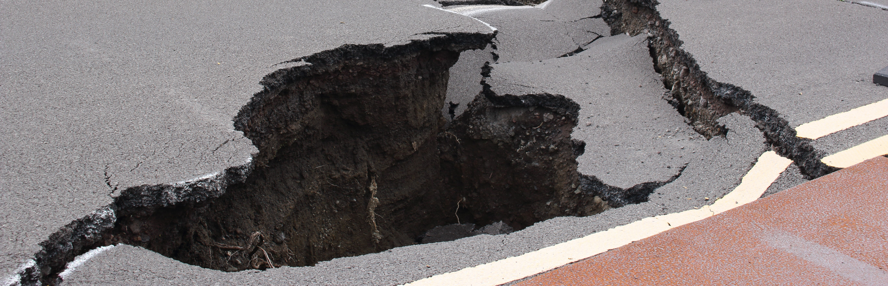
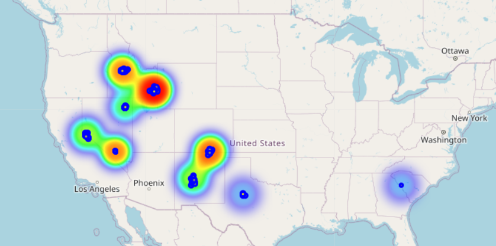

Earthquake Predictions
A data mining project that attempts to understand geospatial data and visualize it to analyze earthquake data. Spatial region based trends, Earthquake prediction trends visualized using spatial data.
The dataset used is the Global Catalog of Calibrated Earthquake Locations that has been collected from 1960 to present date from the U.S. Geological Survey data release. The data collected is obtained from more than 18,000 earthquakes from 250 well-distributed clusters that has a high confidence with very low uncertainty constrained to 1-5km.The data chosen is restricted to the 40 stations in USA distributed across the country in multiple clusters containing events from 1960 to 2021
Input features: Date & Time of event, Longitude, Latitude, Magnitude, Magnitude type, Depth, Ground Truth.
DBSCAN is used to perform spatial clustering which generates a set of clusters classifying the intensity of the earthquakes. LSTM is used for Magnitude Prediction and a heatmap is generated indicating hotzones of high risk regions. The LSTM model is built as a Sequential model with LSTM layers using mean squared error as the loss function and Adam optimizer.
The results visualize hotzones based on the predictions made by the LSTM model
Tools and Libraries used: Pandas, Matplotlib, Numpy, Geopandas, scikit-learn, Folium (to visualize the map and hotzones)
Dataset: Global Catalog of Calibrated Earthquake Locations Harley M. Benz, 2021, Global Catalog of Calibrated Earthquake Locations, U.S. Geological Survey data release, https://doi.org/10.5066/P95R8K8G.
This problem is widely applicable to a lot of organizations that can use this data to decide on how to best manage the incoming disaster.
Find code here: Github Repository-EarthquakePredictions